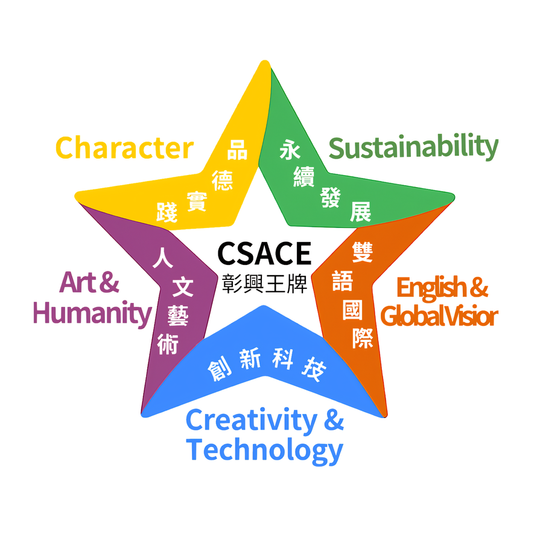
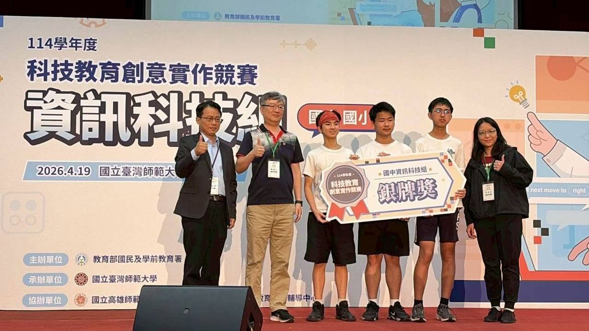
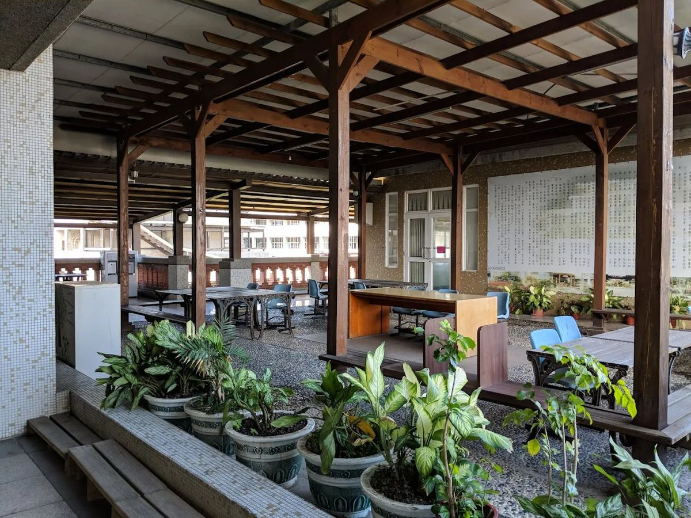

One of Changhua County's most sought-after junior high schools — right in the heart of the city.
彰化縣最搶手的國中之一，座落彰化市核心地帶。
Changsing Junior High sits at the southern edge of Changhua City, where the urban grid meets the fields of Huatan Township. Founded in 1997, the school has grown in less than three decades into a campus that families plan years ahead to join: enrollment is capped, and demand never drops.
彰興國中坐落於彰化市南端，城市邊界與花壇鄉交界之處。創立於民國 86 年（1997），不到三十年便成為家長們超前佈局的首選學區——總量管制，年年搶破頭。
Our campus has been honored with an architect's design award, featuring elegant Min-style architecture and anchored by our landmark Octagonal Pavilion Library. At Changsing, we are dedicated to fostering an optimal learning atmosphere that radiates warmth and tranquility.
我們的校園獲得建築師設計獎，以優雅的閩式建築為特色，校園地標是八角亭圖書館。在彰興，我們致力於營造最佳的學習氛圍，充滿溫馨與祥和。
Under Principal Kuo Jia-wen, who took office in August 2025, Changsing continues to set the standard: strong academics, certified immersive English instruction, national awards in arts and science, and a campus where every student finds a reason to thrive.
在 114 年 8 月接任的郭佳文校長帶領下，彰興持續保持高水準：紮實學風、獲教育部認證的沉浸式英語教學、全國性藝術與科學獎項，以及讓每個孩子都能找到亮點的校園環境。
We envision being a comprehensive hub for balanced education in five crucial areas. We emphasize moral cultivation and stay ahead of the times by encouraging students' diverse interests and skills. Changsing takes pride in being a frequent victor in various competitions, whether they're related to academics, arts, or sports.
彰興是一所五育均衡發展的全人殿堂，不僅注重品德的修養，更是走在時代前端的學校。重視學生多元興趣與技能，成立各類社團，提供展現跨領域能力的多元舞台，讓彰興學子不管是課業、藝文、體育等等，都是各方面競賽表現的常勝軍。

Five points, one well-rounded student.
五個面向，撐起全人教育的一片天：品德實踐、永續發展、人文藝術、雙語國際、創新科技。

Our global self-making center fosters creativity and innovation.
我們的全球自造中心培養創新與創造力。
Our school's unique architectural design enriches the learning environment.
我們學校獨特的建築設計豐富了學習環境。
We celebrate diversity and encourage multi-lingual proficiency.
我們慶祝多元性並鼓勵多語言精通。

Recognized as a core school of the Ministry of Education's Leading School program.
教育部前導學校核心學校。

A Ministry of Education–designated school promoting AI education.
教育部AI中小學校推動人工智慧教育學校。

Comprehensive English courses taught by foreign teachers, plus the SIEP, SIA plan, and Enactus international video courses.
外師全英語課程、SIEP、SIA計畫、Enactus國際視訊課程。

Fostering curiosity about the universe through the Changsing Youth Star-Chasing SMART LEARNING program and gifted astronomy courses.
彰興少年追星趣 SMART LEARNING、資優寰宇天文課程。

A National Reading Milestone School, promoting festive reading, English-listening morning reading, and more.
全國閱讀磐石學校，推動節慶閱讀、英聽晨讀等課程。

With 68 clubs, we cultivate students' diverse interests and skills.
成立 68 個社團，培養學生多元興趣與技能。
Changsing's immersive English program is not an add-on — it is woven into the school's daily rhythm. When international guests visit, Changsing students are the guides. When the morning announcement plays, it plays in two languages. English here is not a subject; it is a practice.
A walk around Changsing — from the front gate to the rooftop garden.
從校門口到頂樓花園，走一圈彰興的校園角落。